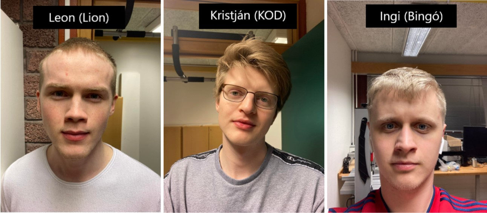

Lokaverkefni
Að ofan sést mynd af mér ásamt hópmeðlimum mínum í þessu verkefni, þeim Inga Þór (Bingó) og Krisján Orra (KOD).
Þetta verkefni var unnið samhliða öðru verkefni í áfanganum Tölvustýrður Vélbúnaður þar sem við sömu hópmeplimirnir erum smíðuðum óheðbundna vindmillu sem nýtir sér Magnúsar áhrifin til þess að snúa öxul og framleiða rafmagn þannig.Til þess að auka lyftikraftinn á sívalningum (í stað spaða) vindmillunnar var ætlunin að fræsa út mót fyrir sílikon hulsum með golfkúlumynstri sem hægt er að setja á sívalningana, eins og sést hér fyrir neðan. Hulsurnar verða notaðar í að auka lyftikraft á snúandi sílinderum sem verða fyrir vindkviðu.
nánari upplýsingar um verkefnið má finna á vefsíðu BINGÓ Vefsíða BINGÓ
Fyrir forvitna er hönnun vindmillunar eins og á myndinni að neðan
Að neðan er video sem útskýrir hvern vegna kúlu kenndir skurðir hylma yfirborð golfkúlu. Datt okkur í hug að sömu reglur ættu að gilda fyrir sívalninga vindmillunar.